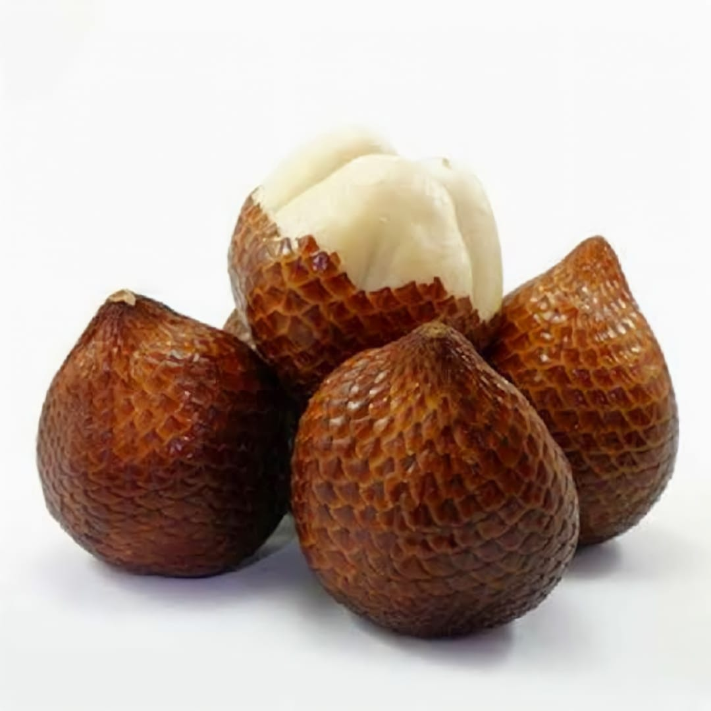

Mangga Harum Manis

Mangga lokal yang manis, harum, dan kaya vitamin C. Cocok dimakan langsung atau dijadikan jus.
Rp 25.000 / 1kg
Salak Pangu
Buah salak bermanfaat untuk melancarkan pencernaan dan menjaga kesehatan tubuh karena kaya serat, vitamin, dan antioksidan.
Rp 20.000 / 1kg
Durian Montong

Si raja buah dengan aroma khas dan daging lembut. Kaya energi dan zat besi alami.
Rp 120.000 / 1kg
Rambutan Binjai

Buah manis dan segar, kaya vitamin C dan antioksidan untuk menjaga daya tahan tubuh.
Rp 15.000 / 1kg